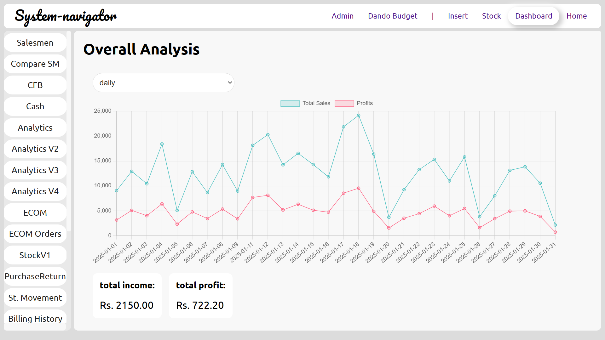

Advanced Reporting Features

Restaurant POS Dashboard – Data-Driven Insights for Smarter Decisions
Are you looking for advanced computer systems for restaurants that provide real-time analytics and
sales tracking? This restaurant POS dashboard offers a seamless experience, allowing business owners
to monitor sales, profits, and inventory with ease.
Key Features of the Restaurant POS Dashboard
- ✅ Real-Time Sales & Profit Analytics – Track total sales (blue) and profits (pink) through an interactive graph.
- ✅ Daily, Weekly, and Monthly Views – Analyze business performance over different time periods.
- ✅ Comprehensive Financial Summary – Get instant insights into total income and net profit, ensuring better financial decisions.
- ✅ Smart Navigation & Quick Access – Easily switch between billing history, stock management, e-commerce orders, and analytics reports with a single click.
- ✅ User-Friendly Interface – Optimized for touchscreens, making order management effortless for restaurant staff.
Why Choose Our Computer Systems for Restaurants?
Our POS software helps restaurants streamline their operations with an intuitive interface, powerful analytics, and automated financial reporting. Whether you run a small café or a large restaurant chain, this system provides the tools you need to boost efficiency and maximize profits.
Upgrade your restaurant’s technology today with the best restaurant POS system that enhances efficiency, improves decision-making, and keeps you ahead of the competition! 🚀